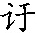

××先生：
惠函收到。……
武松打虎之类的目连戏，曾查刊本《目连救母记》[619]，完全不同。这种戏文，好像只有绍兴有，是用目连巡行为线索，来描写世故人情，用语极奇警，翻成普通话，就减色。似乎没有底本，除了夏天到戏台下自己去速记之外，没有别的方法。我想：只要连看几台，也就记下来了，倒并不难的。
现在听说其中的《小尼姑下山》《张蛮打爹》两段，已被绍兴的正人君子禁止，将来一定和童话及民谣携手灭亡的。我想在夏天回去抄录，已有多年，但因蒙恩通缉在案，未敢妄动，别的也没有适当的人可托；倘若另有好事之徒，那就好了。专复，并请
撰安。
迅 十二月四夜
注 释
[618] 此信称呼于1939年8月20日上海《人间世》第二期《作家书简一束》发表手迹时被略去，第一句后的话亦系发表时所略。
徐

（1908—1980），浙江慈溪人，作家。当时任《人间世》半月刊编辑。[619] 《目连救母记》 明代郑之珍著。有清代种福堂翻印明富春堂刻本，题《新刻出相音注劝善目莲救母行孝戏文》，又有1919年上海马启新书局石印本，题为《祕本目莲救母全传》。